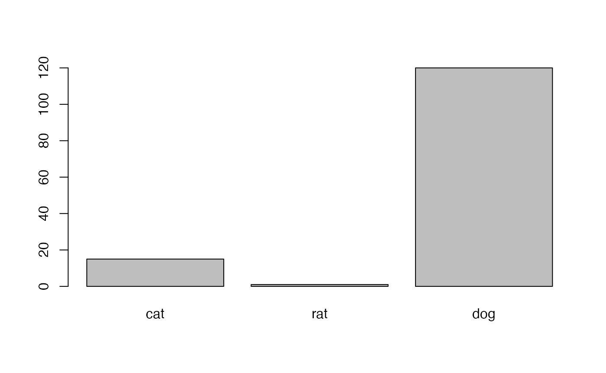

homework_1.RmdThis is going to be a low-stakes effort to get you comfortable with RStudio and RMarkdown. First, you’re going to download the RMarkdown Document for this homework. Copy and paste this command into the console of your RStudio instance.
download.file(url = "https://raw.githubusercontent.com/BiologicalDataAnalysis2019/2022/main/vignettes/homework_1.Rmd", destfile = "/cloud/project/homeworks/homework_1.Rmd")## Warning in download.file(url = "https://raw.githubusercontent.com/
## BiologicalDataAnalysis2019/2022/main/vignettes/homework_1.Rmd", : URL https://
## raw.githubusercontent.com/BiologicalDataAnalysis2019/2022/main/vignettes/
## homework_1.Rmd: cannot open destfile '/cloud/project/homeworks/homework_1.Rmd',
## reason 'No such file or directory'## Warning in download.file(url = "https://raw.githubusercontent.com/
## BiologicalDataAnalysis2019/2022/main/vignettes/homework_1.Rmd", : download had
## nonzero exit statusCan you find where the file downloaded to? Look at the help entry for
download.file if you aren’t sure.
Open the file and answer these two questions:
download.file do?Enter your answer here!Enter your answer here!Next, we’re going to try to execute some code in an RMarkdown document. Press the green triangle.
## [1] "cat" "dog"What just happened? Annotate the above code with two comments (each worth one point) explaining the code.
We can also embed plots in RMarkdown. The below code should embed a barplot. Not very useful, but let me know if you don’t see one show up in your file.
barplot(names.arg=animals, height=weights)
Did the plot show up OK?
Answer yes or no here
For the remainder of the assignment, I need to know three things.
What type of data will you be working with for your thesis or research project? For example: matrices of phylogenetic characters, spreadsheets of ecological observations, shapefiles from 3D scanning, etc. If you aren’t actively doing research, what kinds of scientific questions do you find interesting?
What are you hoping to get out of class?
Are there topics that aren’t on the schedule that you’d be interested to see?